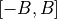
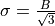
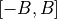
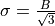
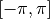

WSF_RADAR_SENSOR¶
- sensor WSF_RADAR_SENSOR¶
sensor <name> WSF_RADAR_SENSOR ... Platform Part Commands ... ... Articulated Part Commands ... ... sensor Commands ... show_calibration_data mode <name> ... Sensor Mode Commands ... ... WSF_RADAR_SENSOR Mode Commands ... beam 1 Antenna Commands ... transmitter ... transmitter commands ... end_transmitter receiver ... receiver commands ... end_receiver ... Beam Commands ... end_beam beam <n> Antenna Commands ... transmitter ... transmitter commands ... end_transmitter receiver ... receiver commands ... end_receiver ... Beam Commands ... end_beam end_mode end_sensor
Overview¶
WSF_RADAR_SENSOR provides a baseline radar implementation. It is capable of representing a wide variety of radar systems including simple single mode early warning radars all the way to complex multiple-mode radars for target detection chances.
A radar definition consists of one or more modes where each mode consists of one or more beams. The ‘mode’ and ‘end_mode’ commands that enclose a mode definition may be omitted if the radar has only one mode. The ‘beam’ and ‘end_beam’ commands that enclose a beam definition may be omitted if a mode has only one beam.
Multiple Beam Considerations¶
If a sensor uses multiple beams, the following considerations should be observed:
Beam numbers must be in strictly increasing numerical order with no gaps. That is, beam 2 must follow beam 1, beam 3 must follow beam 2, etc.
The definition for the first beam (beam 1) provides the initial definition for each subsequent beam. Commands that appear between the beam/end_beam block for the subsequent beams can provide additions or modifications to the initial definition.
If the sensor has multiple-modes, the number of beams for each must be the same (this restriction may be removed in a future release).
Sensor Level Commands¶
- show_calibration_data¶
Write information about the characteristics of the radar to standard output. This will include the one square meter detection range as well as any other values that may need to be derived.
Mode Commands¶
- transmit_only¶
- receive_only¶
Indicate that only the transmitter or receiver will be used.
Note
For bistatic interactions where transmitter masking is not of concern please set check_transmitter_masking to ‘off’ or ‘false’.
- compute_measurement_errors [ true | false ]¶
If true, measurement errors will be computed using standard radar error model equations. If false, measurement errors will be computed using the common sensor error model.
Default: false
- override_measurement_with_truth [ true | false ]¶
This command will compute the measurement errors and report the errors in the track, but will report the truth location in the track instead of using the location with the measurement errors applied. This is typically used for testing trackers.
Default: false
- frequency_select_delay <time-value>¶
Specifies the delay when selecting between different frequencies as defined on the transmitter.
Note
This input is only operational for the WSF_AGILITY_EFFECT frequency_changing functionality.
Default: 0.0 seconds
- maintain_track_measurement_history <boolean-value>¶
If true, the mode will maintain a track’s history of measurements produced from successful detections.
Default: false
Beam Commands¶
- doppler_resolution <speed-value>¶
Defines the target Doppler speed resolution (i.e., opening or closing speed) capability of the radar.
Default: 0.0
Note
This input is currently only used in computing range-rate measurement errors associated of this sensor. The compute_measurement_errors must be set to true and the reports_range_rate must be specified to enable the range-rate error computation.
- adjustment_factor <dbratio-value>¶
A method of adjusting a beam’s detection capability. Positive value increase the sensor’s detection capability.
Default: 0.0 dB
- operating_loss <dbratio-value>¶
Defines the beam’s operating loss.
Default: 0.0 dB
Note
Loss should be entered as positive value.
- integration_gain <dbratio-value>¶
Defines the integration gain when using the binary detector (detection_threshold). This is not applicable when using the Swerling detector (swerling_case) or detection_probability.
Default: 0.0 dB
- detection_threshold <dbratio-value>¶
An alternative method of defining the receiver’s detection threshold. The value can be entered here for readability of the input file.
Default: 3.0 dB
- swerling_case [ 0 | 1 | 2 | 3 | 4 ]¶
Indicates that the Marcum-Swerling detector model is to be used and specifies the ‘case’ to be used.
Default: The default is to use the binary detector with a detection threshold defined by detection_threshold
- number_of_pulses_integrated <integer-value>¶
Specifies the number of pulses the Marcum-Swerling detector integrates.
Default: 1
- probability_of_false_alarm <pfa>¶
Specifies the false alarm probability.
Default: 1.0e-6
- detector_law [ linear | square | log ]¶
Specifies the type of Marcum-Swerling detector.
Default: linear
- no_swerling_case¶
Specifies not to use a Marcum-Swerling detector. Detections will be based on the detection_threshold. This is the default configuration.
- detection_probability¶
Defines a function of probability of detection (Pd) versus received signal-to-noise ratio (more specifically, it is really the signal-to-interference ratio, which includes the effects of receiver noise, interference and unsuppressed clutter). This is an alternative to using the Swerling detector (swerling_case) or the binary detector (detection_threshold). The table is defined as follows:
detection_probability signal_to_noise <db-ratio-1> pd <pd-value-1> signal_to_noise <db-ratio-2> pd <pd-value-2> ... signal_to_noise <db-ratio-n> pd <pd-value-n> end_detection_probability
- <db-ratio-n>
The signal-to-noise ratio of the received signal.
- <pd-value-n>
The probability of detection associated with the ratio.
There must be at least two entries and the ratios must be monotonically increasing. Signals that exceed the limits of the table will be clamped to the appropriate endpoint. Intermediate values will be determined using linear interpolation between ‘dB’ values.
Default: The default is to use the binary detector with a detection threshold defined by detection_threshold.
- post_lockon_detection_threshold_adjustment <dbratio-value>¶
Defines a value by which the detection threshold will be adjusted once a ‘locked-on’ state has been achieved for the current mode of the sensor. This is typically used with tracking sensors to indicate that the detection threshold is less once a locked-on state has been achieved. The value is typically a negative ‘dB’ value, although it can be 0 dB or greater if that is what is desired.
Default: 0 dB
- post_lockon_adjustment_delay_time <time-value>¶
Defines the time that must elapse from when a sensor declares that a ‘locked-on’ state has been achieved before applying the post_lockon_detection_threshold_adjustment.
Default: 0.0 seconds
- one_m2_detect_range <length-value>¶
- range_product <area-value>¶
- loop_gain <dbratio-value>¶
Alternative methods to specify a radar beam’s detection capability. If specified, the receiver’s noise value will be calibrated to yield the specified detection range.
- look_down_factor <dbratio-value>¶
Defines a beam’s look-down loss. The ratio will adjust the received signal power for targets that are located below the beam’s antenna.
Default: 1.0
- prf_factor <dbratio-value>¶
Defines a factor that represents the detection difference for a beam that uses interleaved HPRF and MPRF waveforms. The prf_factor is applied to the received signal power if the absolute value of the target closing speed is less than the ownship velocity.
Default: 1.0
- clutter_model <derived-name>¶
clutter_model *<base-name>* …commands… end_clutter_model
Specify the clutter model. See clutter_model for more information about the available clutter effects and how to configure the models.
Default: none (No clutter)
- clutter_attenuation_factor <dbratio-value>¶
Specifies a constant value in the range [ 0 .. 1 ] by which the clutter returned will be multiplied to create an ‘attenuated clutter return.’ If the signal_processor type mti_processor is supplied and this value is not provided, a clutter attenuation value will be computed.
Default: 1.0 absolute (i.e., No clutter attenuation)
- signal_processor <type-name> …commands… end_signal_processor¶
Specifies the signal processor identified by <type-name> form the following list:
The following signal processors are specific to WSF_RADAR_SENSOR type definitions.
- simple_doppler
Models simple Doppler effects with minimum / maximum Doppler Speed cutoffs.
- mti_adjustment
Models MTI adjustment as function of closing speed or Doppler frequency.
- mti_processor
Models a Dual-Delay Line Canceler Moving Target Indicator.
- sensitivity_time_control
Models Sensitivity Time Control (STC) Effects, ALARM based implementation.
- pulse_doppler
Models Pulse Doppler (PD) Effects, ALARM based implementation.
- moving_target_indicator
Models Moving Target Indicator (MTI) Effects, ALARM based implementation.
- moving_target_detector
Models Moving Target Detector (MTD) Effects, ALARM based implementation.
- error_model_parameters … end_error_model_parameters¶
-
Error model parameter overrides to be used by the radar_sensor_error to calculate the error in lieu of using default receiver / transmitter data.
- azimuth_beamwidth <angle-value>¶
Specifies the azimuth beamwidth to be used by the error_model.
Default: Receiver azimuth beamwidth.
- elevation_beamwidth <angle-value>¶
Specifies the elevation beamwidth to be used by the error_model.
Default: Receiver elevation beamwidth.
- pulse_width <time-value>¶
Specifies the pulse width to be used by the error_model.
Default: Transmitter pulsewidth, corrected by pulse compression ratio.
- receiver_bandwidth <frequency-value>¶
Specifies the receiver bandwidth to be used by the error_model.
Default: Receiver bandwidth.
- doppler_resolution <speed-value>¶
Specifies the doppler resolution to be used by the error_model.
Default: Beam Doppler resolution.
Jam Strobe Detector¶
- jam_strobe_detector … end_jam_strobe_detector¶
The jam_strobe_detector allows a WSF_RADAR_SENSOR mode to detect and report the azimuth and/or elevation of jamming power it receives via indicator or strobe tracks. These recorded strobes can be combined with angle-only measurements from other radars using a jam strobe estimator (JSE) algorithm to produce pseudo-measurements passed to a tracking algorithm. Reporting information as well as errors are specified outside the general sensor error models due to differences in the error calculations.
The implementation includes support for Gaussian or uniform errors, specification of error as a fraction of the receiver beamwidth, and jamming perception thresholds.
Note
This capability is not fully implemented and will require further use and test cases to enable it to work fully to user specifications. Track fusion currently does not allow for bearing only tracks, which could be a shortfall of the use of this capability.
... mode ... ... jam_strobe_detector gaussian_azimuth_error_sigma ... gaussian_elevation_error_sigma ... uniform_azimuth_error_sigma ... uniform_elevation_error_sigma ... uniform_azimuth_error_bound ... uniform_elevation_error_bound ... # Jamming Perception Commands jamming_perception_threshold ... continuous_jamming_perception_threshold ... pulsed_jamming_perception_threshold ... coherent_jamming_perception_threshold ... reports_bearing reports_elevation reports_nothing track_quality ... end_jam_strobe_detector ... end_mode ...
- gaussian_azimuth_error_sigma [ <angle-value> | <real-value> fraction_of_beamwidth ]¶
- gaussian_elevation_error_sigma [ <angle-value> | <real-value> fraction_of_beamwidth ]¶
- uniform_azimuth_error_sigma [ <angle-value> | <real-value> fraction_of_beamwidth ]¶
- uniform_elevation_error_sigma [ <angle-value> | <real-value> fraction_of_beamwidth ]¶
- uniform_azimuth_error_bound [ <angle-value> | <real-value> fraction_of_beamwidth ]¶
- uniform_elevation_error_bound [ <angle-value> | <real-value> fraction_of_beamwidth ]¶
Specifies the standard deviation for a Gaussian or Uniform distribution of errors to be applied to the azimuth and elevation of the track. The standard deviation may be specified directly as an angle value or as a fraction of the beamwidth of the receiver. In the case of a Uniform distribution, the error bound
 may be specified instead of the standard deviation. The standard deviation of a symmetric Uniform distribution on the interval  is defined to be .
may be specified instead of the standard deviation. The standard deviation of a symmetric Uniform distribution on the interval  is defined to be .
These commands determine the target information reported in a given sensor’s track report by the jam strobe detector.
Note
If a filter (e.g., WSF_KALMAN_FILTER, WSF_ALPHA_BETA_FILTER) is being used, the reported tracks are marked as being filtered, and reported position information (bearing/elevation) will be the filtered position.
- reports_bearing¶
The bearing from the sensor to the target is reported. This angle is measured in radians from the sensor’s north orientation, and it is in the range .
- reports_elevation¶
The elevation angle from the sensor to the target is reported.
- reports_nothing¶
Has the effect of canceling any previous ‘reports’ commands. This is useful if one wants to reuse an existing sensor definition with embedded ‘reports’ commands but needs to change what is reported.
- track_quality [0 .. 1]¶
Specify the ‘quality’ of the track when produced from this jam strobe detector.
Default: 1.0
Jamming Perception Commands¶
These commands are beam level commands, except when used inside the jam_strobe_detector
- jamming_perception_timeout <time-value>¶
Specifies the time after which jamming that was perceived is no longer perceived, so that the perception of jamming will be returned to a ‘false’ state. If jamming is perceived again before this time has elapsed then the perception of jamming will remain or become ‘true’.
Default: sensor frame_time
- jamming_perception_threshold <ratio-value>¶
- continuous_jamming_perception_threshold <ratio-value>¶
- pulsed_jamming_perception_threshold <ratio-value>¶
- coherent_jamming_perception_threshold <ratio-value>¶
Specifies the minimum threshold value that jamming will be perceived by the operator. Often used in conjunction with jamming_perception_timeout, JammingPerceived script method and electronic_protect techniques.
Default: 380 dB
Close Target Detection Commands¶
- close_target_detection … end_close_target_detection¶
The Close Target Detection (CTD) model allows for closely spaced targets and other platform types to be detected and their results used for location measurement and track creation.
This capability is primarily used in tracking radars. Current implementation utilizes the acquire_deltas to initially acquire nearby targets and select their results measurement if they fall within ALL of the acquire criteria.
The reacquire_deltas are utilized to prevent target tracking radar types from reacquiring the target if ANY of the specified criteria is outside the limits for reacquiring the requested (i.e. tracked) target. In the case that reacquire is not allowed the track will be dropped and proper behavior of the sensor will need to be implemented to handle this case, e.g. a state machine or scripted method monitoring the sensor track drop.
... beam ... ... close_target_detection debug acquire_deltas .. end_acquire_deltas reacquire_deltas ... end_reacquire_deltas end_close_target_detection ... end_beam ...- debug¶
If specified debug messages to standard output are available.
- acquire_deltas … end_acquire_deltas¶
Defines the deltas for azimuth, elevation and range, with-respect-to the current target cue or request, for which targets will be acquired.
- azimuth_delta <angle-value>¶
Specifies the azimuth delta wrt to the current target cue or request for which other targets will be considered. Value must be >= 0.0.
Default: Do not consider the parameter if not set.
- elevation_delta <angle-value>¶
Specifies the elevation delta wrt to the current target cue or request for which other targets will be considered. Value must be >= 0.0.
Default: Do not consider the parameter if not set.
- range_delta <length-value>¶
Specifies the range delta wrt to the current target cue or request for which other targets will be considered. Value must be >= 0.0.
Default: Do not consider the parameter if not set.
- reacquire_deltas … end_reacquire_deltas¶
Defines the deltas for azimuth, elevation and range, with-respect-to the current target cue or request, for which the target can no longer be reacquired.
- azimuth_delta <angle-value>¶
Specifies the azimuth delta wrt to the current target cue or request for which the target may be reacquired. Value must be >= 0.0.
Default: Do not consider the parameter if not set.
- elevation_delta <angle-value>¶
Specifies the elevation delta wrt to the current target cue or request for which the target may be reacquired. Value must be >= 0.0.
Default: Do not consider the parameter if not set.
- range_delta <length-value>¶
Specifies the range delta wrt to the current target cue or request for which the target may be reacquired. Value must be >= 0.0.
Default: Do not consider the parameter if not set.